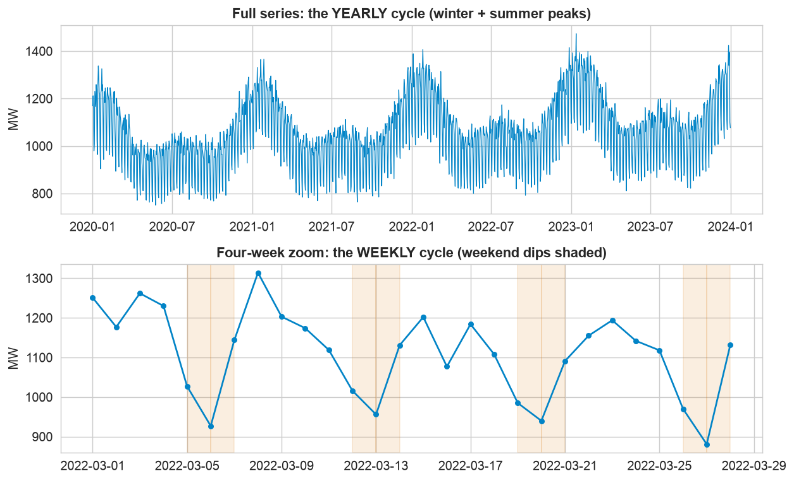
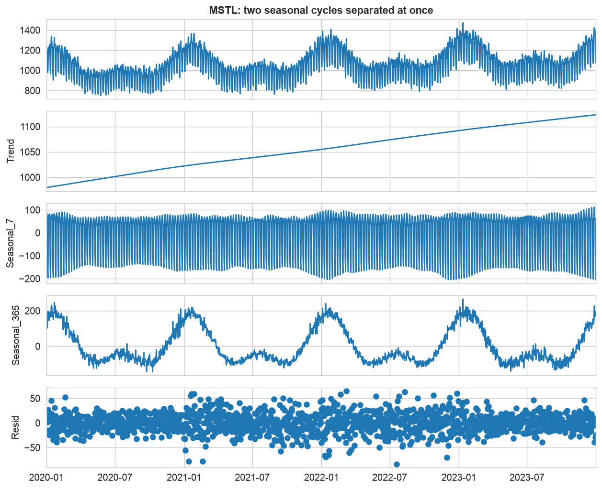
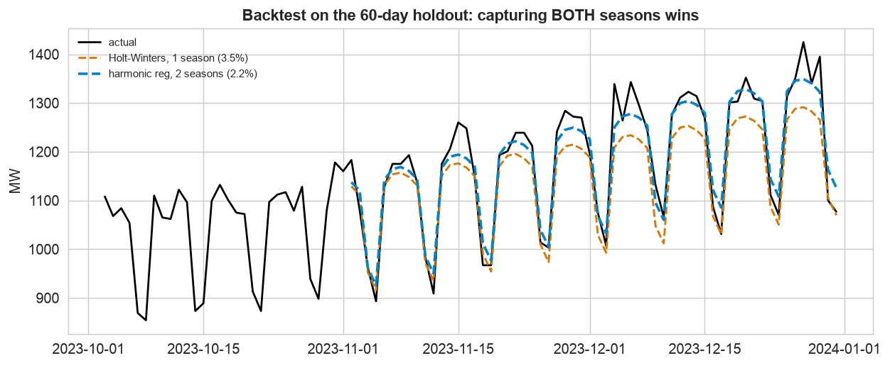
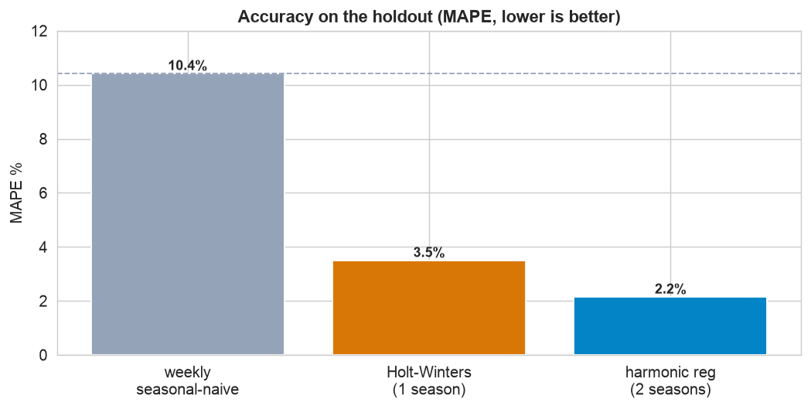
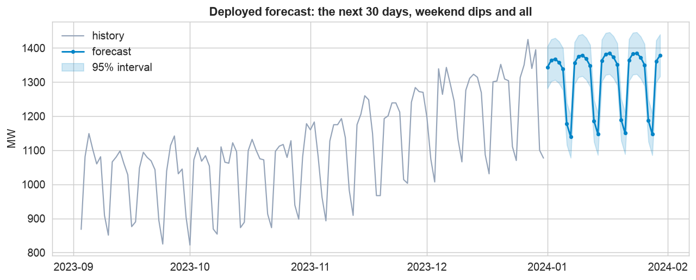

The retail case study had one seasonal rhythm. Electricity demand has two at once: a weekly cycle (weekdays busy, weekends quiet) layered on a yearly one (winter heating and summer cooling). That is the catch, because the workhorse models, Holt-Winters and SARIMA, each support only one seasonal period. Getting both right needs a different tool.
Holt-Winters and SARIMA take a single seasonal period. Set it to 7 and they nail the weekly swing but drift off the yearly curve; set it to 365 and it is unwieldy and ignores the week. To capture both at once, add Fourier terms for the long cycle to a model that already handles the short one.
The 12-Step Forecasting Method
The same case-study discipline, aimed at a double-seasonal series. The companion notebook runs all twelve steps; the sections below tell the story and show the plots.
Daily electricity demand for a region, 1,461 days (4 years, 2020 to
2023), in megawatts. It carries a slow upward trend, a strong weekly cycle (weekday vs weekend),
and a yearly cycle with winter and summer peaks. Two columns: date and
demand_mw. The last 60 days are the holdout.
Inspect & Decompose the Two Seasons (Steps 1–5)
Define and collect
A grid operator forecasts daily demand to schedule generation and avoid both shortfalls and waste. Success: beat a seasonal-naive baseline and, crucially, capture both seasonal rhythms, missing the weekend dip or the seasonal peak means mis-scheduling capacity.
Inspect: two rhythms at once

Zoom out for the year, in for the week. The full series (top) shows the slow yearly cycle with winter and summer peaks; a four-week zoom (bottom) shows the sharp weekly cycle, weekdays near 1,113 MW, weekends (shaded) dropping to about 911 MW. Both patterns are real and sizable, so a good model must reproduce both.
Decompose with MSTL

Two seasons, separated at once. Ordinary decomposition handles one season; MSTL peels off several. It splits the series into a trend, a dense weekly component (roughly 100 to 200 MW swing), a smooth yearly component (the winter-and-summer double peak), and a small residual. Both swings are large, so a one-season model leaves real, systematic error behind.
Stationarity, and the real challenge
Unlike the retail series, this one is trend-stationary (ADF p < 0.05): the trend is gentle, so we model it directly rather than differencing. The genuine obstacle is the double seasonality, which is what the next two steps tackle head-on.
Baseline, One Season vs Two, & Validate (Steps 6–10)
Baseline, then one seasonality
We hold out the last 60 days. The weekly seasonal-naive baseline (repeat last week) scores about 10.4% MAPE. Holt-Winters with a weekly period captures the weekday/weekend swing and the trend, cutting that to about 3.5%, but it has no yearly term, so it slowly drifts off the seasonal calendar.
Both seasonalities: harmonic regression
The fix is a harmonic regression: a linear model with a trend, day-of-week dummies for the weekly cycle, and Fourier terms (pairs of sines and cosines) for the yearly cycle. Fourier terms are how you attach a long seasonal period to any model, a few harmonics trace the smooth annual curve. This captures both rhythms.
Validate on the holdout

Capturing both seasons wins. Holt-Winters (amber) gets the weekly zig-zag right but drifts off the yearly level; the harmonic regression (blue) tracks both. The two-season model reaches about 2.2% MAPE, clearly beating the one-season Holt-Winters.

The full accuracy panel. Each step down the ladder captures more structure: the baseline (10.4%) misses everything but the week, one-season Holt-Winters (3.5%) adds the trend, and the two-season harmonic regression (2.2%, MASE ~0.2) captures the yearly cycle too, cutting the baseline error by nearly 80%.
Interpret
The winner's residuals are small (a Ljung-Box test flags only a little day-to-day autocorrelation, which a short AR term would mop up, see Take It Further), and its coefficients are readable: the weekend effect is a large negative shift (Saturday about 174 MW and Sunday about 213 MW below a Monday), while the Fourier terms trace the annual curve. A model you can both trust and explain is exactly what a control room needs.
Deploy the Forecast (Steps 11–12)
Refit on all data, forecast ahead

The deployed forecast. Refit on all four years, the model projects the next month day by day, weekend dips and all, around an average near 1,310 MW, with a 95% interval on each day. In production it reruns every morning as new actuals land, so the grid team always has a fresh, calendar-aware forecast with its uncertainty.
Communicate
The last step turns the model into guidance the control room can act on, the plain-English write-up below.
Communicate: the Plain-English Write-Up (Step 12)
For the operations team
What is this? A day-by-day forecast of electricity demand for the next month, so the team can schedule generation, buy power ahead, and hold the right reserve, with a sense of how sure we are.
What goes in, and what comes out
Input: four years of daily demand. Output: a forecast for each of the next 30 days, each with a range (a best estimate plus a 95% band).
The decisions we made, and why
- ✓We handled two seasonal patterns at once. Demand follows both a weekly clock (weekdays high, weekends low) and a yearly clock (winter and summer peaks). Standard tools capture only one, so a model that missed the other would be systematically wrong.
- ✓We added the yearly cycle with Fourier terms, a compact way to trace the smooth annual curve, on top of a model that already handled the week.
- ✓We tested it on two unseen months before trusting it, and we report a range, because a single number would understate the day-to-day uncertainty.
How good is it, in plain terms
Over the last two months the forecast was accurate to about 2.2%, far better than repeating last week (about 10%) and clearly better than a one-season model (about 3.5%). It captures the weekend drop and the seasonal drift together.
The bottom line
Demand runs on two clocks: a weekly one (weekdays about 200 MW above weekends) and a yearly one (winter and summer peaks). We forecast the next month to average around 1,310 MW. Schedule extra capacity for weekdays and the seasonal peak, pull back on weekends, plan against the daily range, and the forecast refreshes every morning.
Run the whole project in Python
The companion notebook is the full 12-step workflow: it inspects the two rhythms, separates them with MSTL, checks stationarity, sets a weekly-naive baseline, fits a one-season Holt-Winters and a two-season harmonic regression (day-of-week dummies plus yearly Fourier terms), grades them on the holdout with MAE/RMSE/MAPE/MASE, reads the weekday effects, and refits to forecast the next 30 days with a prediction interval, every step explained.
View opens the rendered notebook instantly.
Open in Colab runs it live. To run locally, install numpy, pandas,
matplotlib, statsmodels, and openpyxl.
🎓 Key Takeaways
- ✓Multiple seasonality is common: energy demand runs on a weekly and a yearly cycle at the same time.
- ✓MSTL separates the cycles: it decomposes a series into several seasonal components at once (here weekly + yearly).
- ✓One-season models fall short: Holt-Winters and SARIMA take a single period, so they capture the week but drift off the year.
- ✓Fourier terms handle the long cycle: a harmonic regression with day-of-week dummies + yearly Fourier terms captures both (2.2% vs 3.5% MAPE).
- ✓Deploy the same way: refit on all data, forecast ahead with a prediction interval, and refresh each morning.
Take It Further
Five ways to sharpen the multiple-seasonality forecast in the notebook:
How many harmonics?
Vary the Fourier order K and pick by AIC and holdout error, too few underfits, too many overfits.
Rolling-origin backtest
Re-forecast from several cutoffs and average, more trustworthy than one split.
How much does each season matter?
Turn the weekly and yearly terms on and off; how much error does each remove?
Dynamic regression
Add an AR term on the residual errors to mop up the leftover day-to-day autocorrelation.
Does the interval hold?
Backtest the 95% coverage, do about 95% of actual days land inside the band?
All five, worked in a companion notebook
A second notebook, Take It Further, rebuilds the Chapter 133 forecast and works every extension with explanations, choosing the Fourier order, a rolling-origin backtest, measuring each seasonality's contribution, dynamic regression to clean the residuals, and a prediction-interval coverage check.
Quiz: Test Yourself
Eight questions on multiple seasonality, MSTL, and harmonic regression. Answer them, hit Check Answers, and keep refining until you score 100%. Your progress is saved.
We have built forecasts three ways; now turn a forecast into a decision. Chapter 139 · Case Study: From Forecast to Decision compares competing forecasts and turns their prediction intervals into inventory and staffing choices.